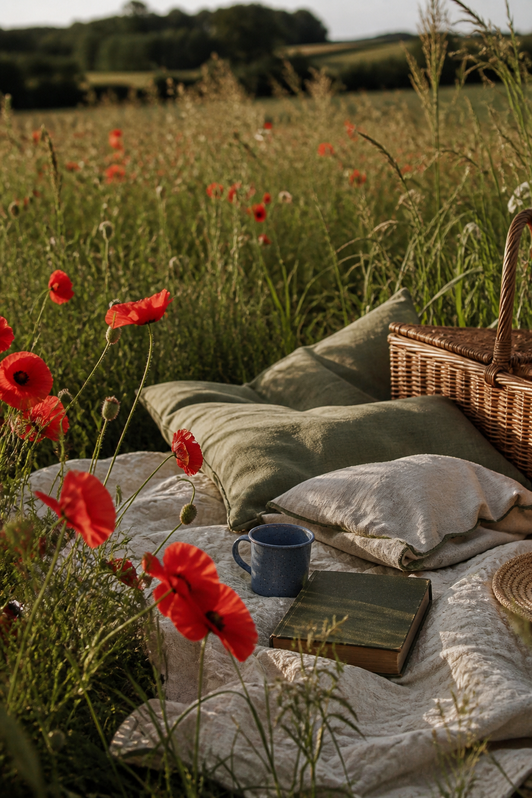
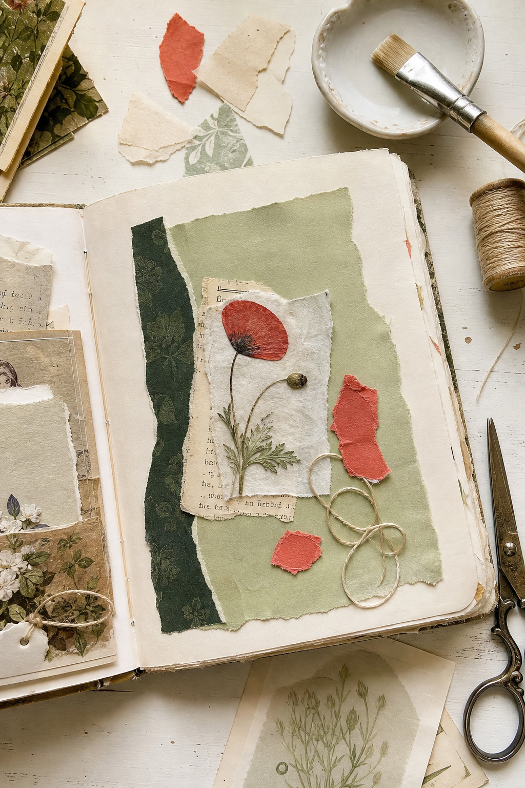
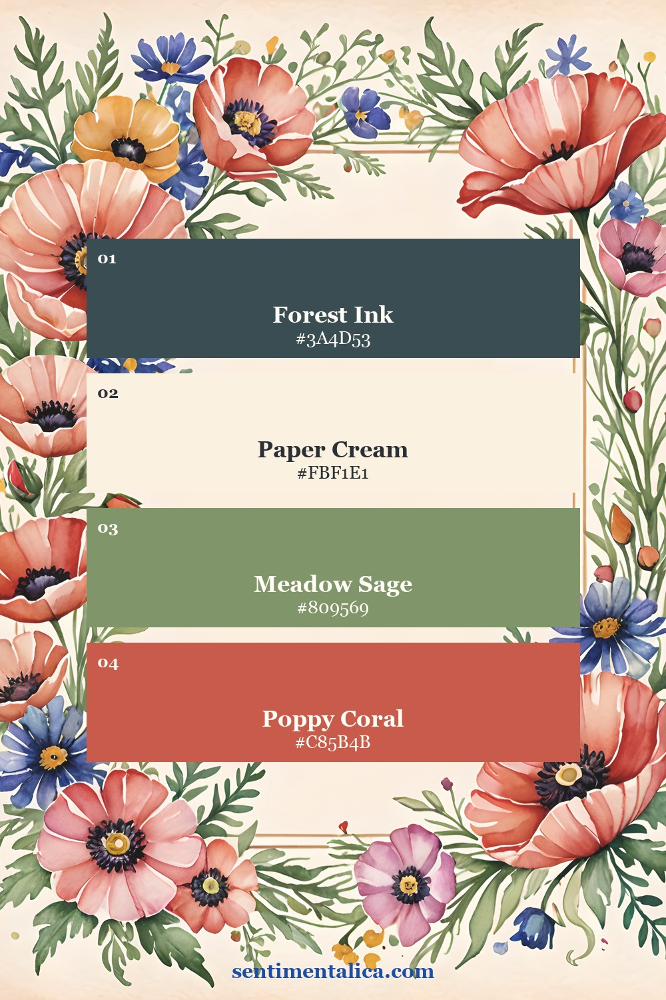
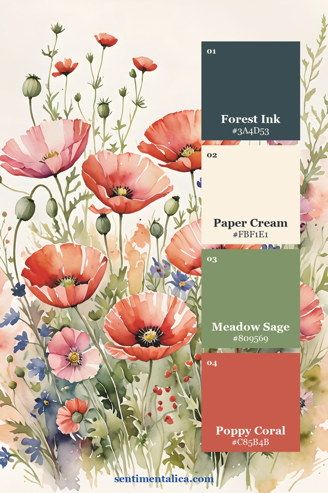
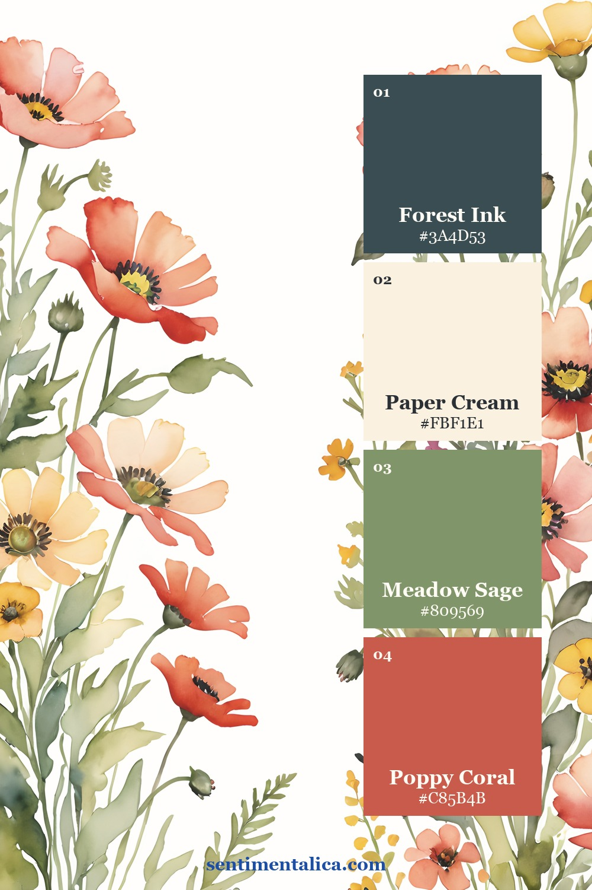
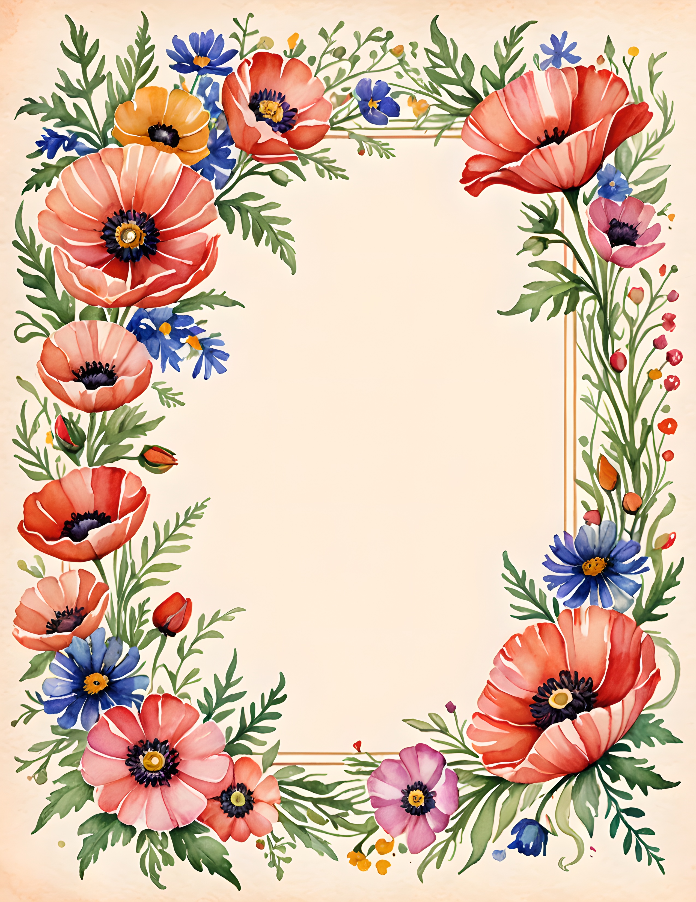
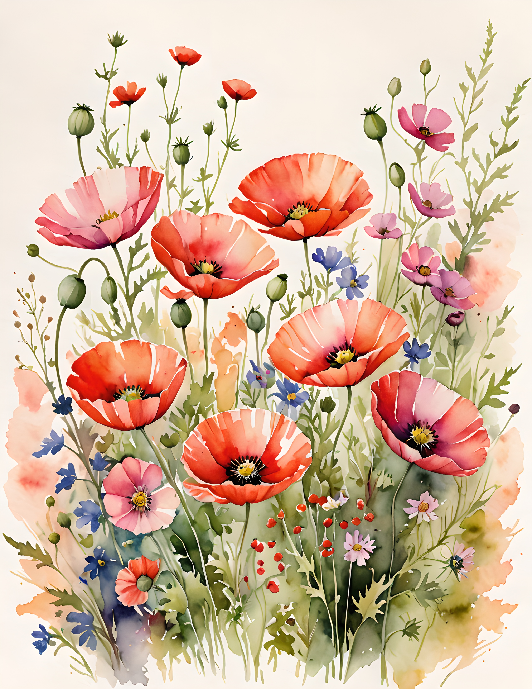
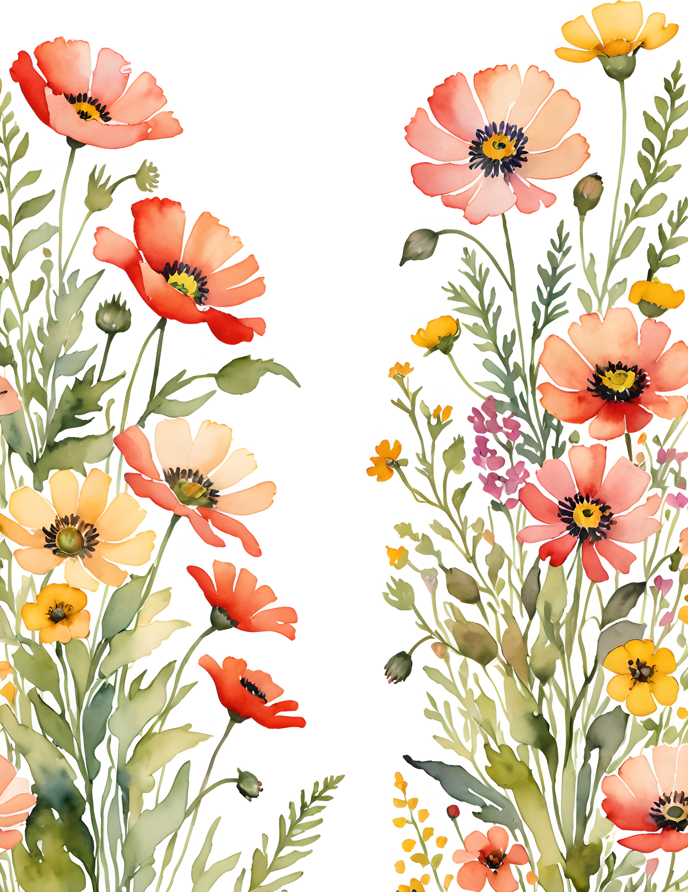

Red poppies are naturally the first thing the eye notices. That is useful when you want a focal point, but difficult when every corner repeats the same red. A softer poppy page treats red as a punctuation mark and lets cream, sage, and deep ink carry the sentence.
Choose coral red instead of primary red
Begin with a poppy color that leans slightly coral or brick. It feels warmer beside old paper and does not create the hard contrast of a clear primary red. If your printed flower is vivid, repeat it with a duller torn paper rather than another bright image.

Let the rest of the page stay quieter than the flower. Paper cream gives the eye space, meadow sage connects the stems and leaves, and forest ink adds enough depth that the red does not have to do all the work.
Place red in three unequal points
Try one large, one medium, and one tiny red detail. The large point may be a poppy image. The medium point could be a torn coral scrap. The tiny point might be thread, a pencil line, or the edge of a stamp. Unequal sizes create movement without turning the spread into polka dots.
Keep two of the red points close to the main cluster and place the third farther away. This pulls the eye across the page while preserving one calm area for writing.

Build from quiet to bright
- Cover no more than half the page with a soft cream base.
- Add one sage shape large enough to support the focal flower.
- Tuck in a narrow forest-ink layer for depth.
- Place the poppy image, then add only two smaller red echoes.
- Stop before every empty space is filled.
If the page still feels too bright, do not add beige over everything. Increase the cream margin or deepen the dark anchor. Both choices give the red a clearer role.
Match each color to a different texture
Let the poppy remain smooth and detailed, then make the supporting colors quieter through texture. Cream can come from fibrous handmade paper, sage from faded cloth, and forest ink from a narrow stamped edge. When every red element is glossy, crisp, or highly printed, the page feels louder. One detailed flower surrounded by softer surfaces keeps the focal point obvious.
Before gluing, move the red pieces together. If they read as one cluster from a distance, the page will feel calmer than three unrelated bright spots.
Three ways the same palette can breathe
A border page places color around open writing space. A meadow composition gathers the strongest red near the lower half. A floral edge lets the paper remain mostly pale. These different structures use the same four colors, so you can change the layout without losing the mood.



For an extra flower that will not compete with the poppies, select a pale cream or muted blue bloom from the 100 free floral pictures. Use it once, close to the writing area.
See how the red is distributed



Wild Bloom is a commercial-use watercolor image pack with poppies, summer meadow flowers, and botanical page compositions. It gives you several red distributions to study before you add personal papers, labels, and writing.
Red does not need to become quiet to feel romantic. It only needs enough cream around it, enough green beneath it, and one dark note to hold the composition steady. Find more gentle layout ideas in the Sentimentalica journal.